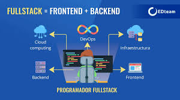

¡Conviértete en un desarrollador full stack y domina el mundo del desarrollo web de principio a fin! 🚀 Aprende a crear interfaces atractivas (frontend) y sistemas robustos (backend) con tecnologías como HTML, CSS, JavaScript, Node.js, y bases de datos. Nuestro curso online te prepara con proyectos reales, soporte de expertos y una metodología flexible que se adapta a ti. 🌐 Da el salto hacia una carrera completa en desarrollo web y amplía tus oportunidades en el mercado laboral. ¡Empieza ahora y crea aplicaciones increíbles de principio a fin!

Contenido del curso:
Curso Backend Academia ConquerBlocks
Bloque
Módulo
nº horas video
nº horas trabajo en casa
Profesor
Frontend Developer
HTML
10
30
Gabriel López
CSS
20
60
Gabriel López
JavaScript
20
60
Gabriel López
TypeScript
5
15
Mónica García
ReactJS
5
15
Mónica García
Astro
5
15
Mariano Zabala
Angular
5
15
Martín Capriles
Backend Developer
Python
15
45
Daniela Rodríguez
Django
5
15
Daniela Rodríguez
SQL
10
30
Daniela Rodríguez
Java
10
30
Mónica García
NodeJS
5
15
Jesús López
Rust
5
15
Julia Roque
Contenido extra
Linux (terminal)
10
30
Valeria Sánchez
SSH
5
15
Valeria Sánchez
Git y GitHub
5
15
Valeria Sánchez
Docker
5
15
Valeria Sánchez
Azure
5
15
Valeria Sánchez
Total horas
150
450
Precio del curso:
Este curso tiene un precio de 1000 € e incluye todo lo necesario para que aproveches al máximo tu formación.
📚 Tendrás acceso completo a nuestra plataforma online, donde encontrarás materiales exclusivos, ejercicios prácticos y contenido adicional.
🎥 También disfrutarás de clases grabadas para que estudies a tu ritmo, soporte por parte de nuestros instructores especializados y actualizaciones constantes del contenido.
Además, al finalizar, obtendrás un certificado de finalización que avala tus conocimientos. ¡Invierte en tu futuro y comienza a aprender hoy mismo!
Profesores principales:
Valeria Sánchez (Full Stack Developer) - Tutora
Valeria Sánchez (2000, Santa Cruz de Tenerife), natural de Santa Cruz de Tenerife, es experta en Frontent y Backend. Ha trabajado para algunas de las principales empresas del sector, tanto nacionales como internacionales.
Gabriel López (Frontend Developer)
Gabriel López (1995, Ciudad Real), natural de Alcázar de San Juan (Ciudad Real), es experto en Frontend. Ha trabajado para algunas de las principales empresas del sector, tanto nacionales como internacionales.
Daniela Rodríguez (Backend Developer)
Daniela Rodríguez (1998, Madrid), natural de Alcalá de Henares (Madrid), es experta en Backend. Tiene un doctorado y ha trabajado para algunas de las principales empresas del sector, tanto nacionales como internacionales.